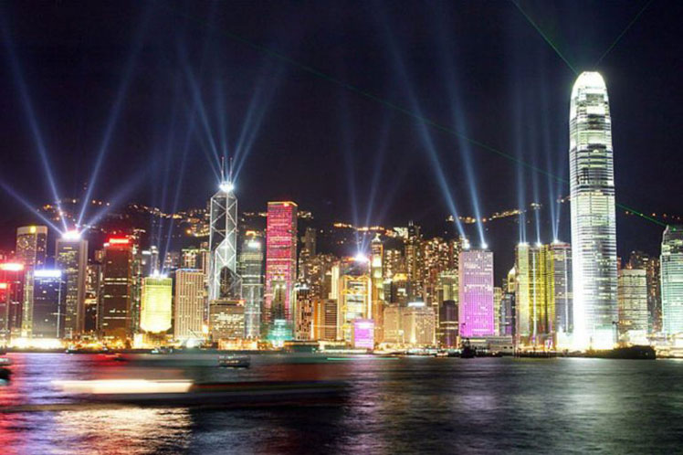

Tema 6: Contaminación lumínica.
La contaminación lumínica consiste en la dispersión de los excedentes de luz provenientes de las fuentes artificiales de iluminación por la atmósfera que provocan en consecuencia que el brillo sobre el cielo nocturno aumente. Este brillo aumenta a causa de las propiedades de reflexión y refracción de la luz al atravesar las partículas que se encuentran en nuestra atmósfera.
Causas de la contaminación lumínica:
Los proyectores o cañones láser.
La iluminación excesiva con fines publicitarios.
La ausencia de un horario de apagado y encendido eficiente, puesto que en muchas ocasiones la iluminación es innecesaria para las actividades previstas en esa determinada zona.

Consecuencias de la contaminación lumínica.
Pérdida energética con la consiguiente pérdida económica.
El consumo energético excesivo genera mayores cantidades de residuos durante su producción, lo cual contribuye al cambio climático.
Altera los ciclos naturales de muchas especies al causar modificaciones en sus biorritmos de actividad-descanso.
Derivado de la modificación de los biorritmos, puede producir fatiga, insomnio o ansiedad, entre otros.
Afecta gravemente a las cadenas tróficas en las que se ven implicados los animales nocturnos, puesto que su capacidad de caza se ve comprometida y, por tanto, su alimentación.
¿Cómo podemos contribuir para la disminución de la contaminación lumínica?
Direccionar adecuadamente los puntos deiluminación.
Usar luces de baja intensidad y eficientes.
Implementar políticas urbanas que limiten el uso de luces, tanto en cantidad como en intensidad. Esto debería incluir que se prohíban las luces que enfocan directamente al cielo.
Colocar sensores de movimiento para el encendido y el apagado o temporizadores.
Apagar las luces cuando no se usan.